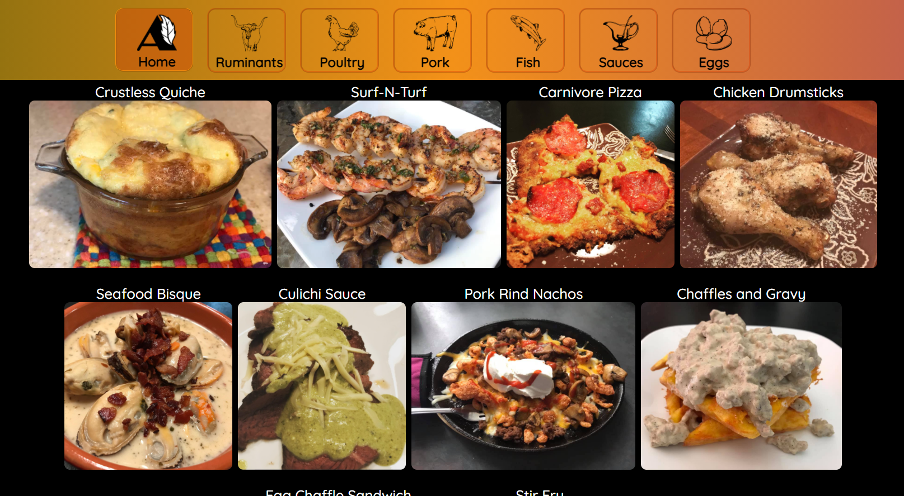

My Work
On this page, you will find a collection of my completed projects and works in progress. Clicking the links will either load a project page, walking you through the design process and expanding on the intent, or will load the actual completed webpage (in a new window). If you'd like to make any inquiries about these pages or about a project you need help with, please find my contact information on my Contact Page. I'd love to hear from you.
Autumn All Year
True North Weather

Wok Asian Cuisine

Two Trees Creative

Two Trees Creative is an advertising website for a fictitious businesse. This site was designed to be simple, while offering clients insight into the design firm's creative team, portfolio, and location, as well as providing a contact form. This site is an example of a single-page, advertising webpage.
Two Trees Creative's website is accessible on mobile and tablet has not been coded for responsive web design. This site is an example of a site designed for desktop/laptop access. A site designed for a live business would always be coded with responsive web design elements in mind, making the site highly accessible across different device platforms.
Autumn's Hand Crafted